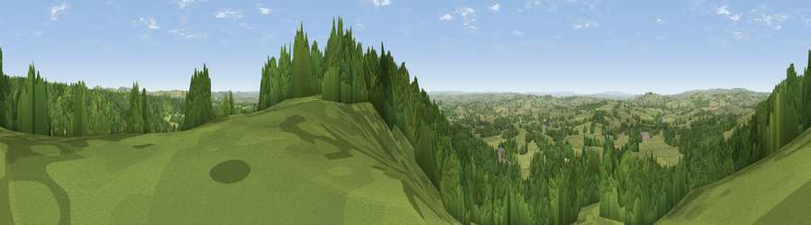

Viewpoint near Penselwood
#8692 in England · top 11% of its area beats it · near PenselwoodThe view, rendered

A 360° render of this exact spot computed from the terrain model, tree cover and land cover — summer colours, afternoon light, calibrated against photographs of famous viewpoints. Real trees, hedges and buildings will differ in detail.
The panorama
Grey silhouette: terrain skyline in each direction (720 bearings, Earth curvature and refraction included). Dashed green: skyline with trees (+15 m) and buildings (+8 m) as obstacles. Blue strip: how far the ground is visible on each bearing.
Where the view opens
Wedge length = distance to the farthest visible ground on that bearing (vegetation-aware). Rings at 10, 25 and 50 km.
What fills the view
62% woodland · 35% grassland · 3% cropland ·
Angular shares of the visible panorama (visual magnitude), not map area. Landscape diversity 0.35 (0–1 Shannon).
Key numbers
More beautiful places nearby
The staircase of upgrades: each row has a higher view potential than everything closer. Driving times are estimates from straight-line distance, calibrated against real road routing — check an actual route before setting out.
| Place | Direction | Drive | Score |
|---|---|---|---|
| Viewpoint near South Brewham | NNW · 1 km | ~4 min | 67.5 |
| Viewpoint near South Brewham | N · 2 km | ~5 min | 69.5 |
| Long Knoll | NE · 6 km | ~12 min | 74.6 |
| Viewpoint near Lamyatt | WNW · 8 km | ~17 min | 77.8 |
| Viewpoint near Berwick St John | SE · 22 km | ~36 min | 78.2 |
| Beacon Batch | NW · 35 km | ~54 min | 79.4 |
| Viewpoint near Askerswell | SSW · 44 km | ~64 min | 81.7 |
| Lewesdon Hill | SW · 45 km | ~65 min | 83.3 |
51.10058, -2.36235 · source: screening · position refined by local search. Computed location — check access rights before visiting.